Plinth & Spellstone framing
Locked in · subtle edging across all 36 finishes.
Approved PlinthSoft outlines with a little more contrast.
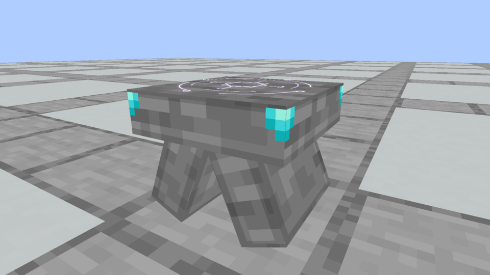
Approved SpellstoneA little more definition around the slab and supports.
Previous faint version
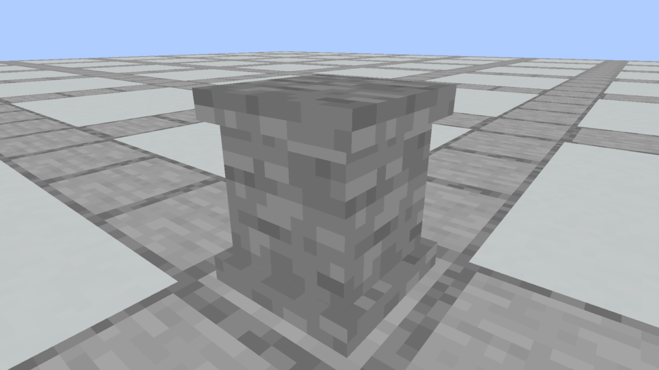
Faint PlinthThe version that needed more contrast.
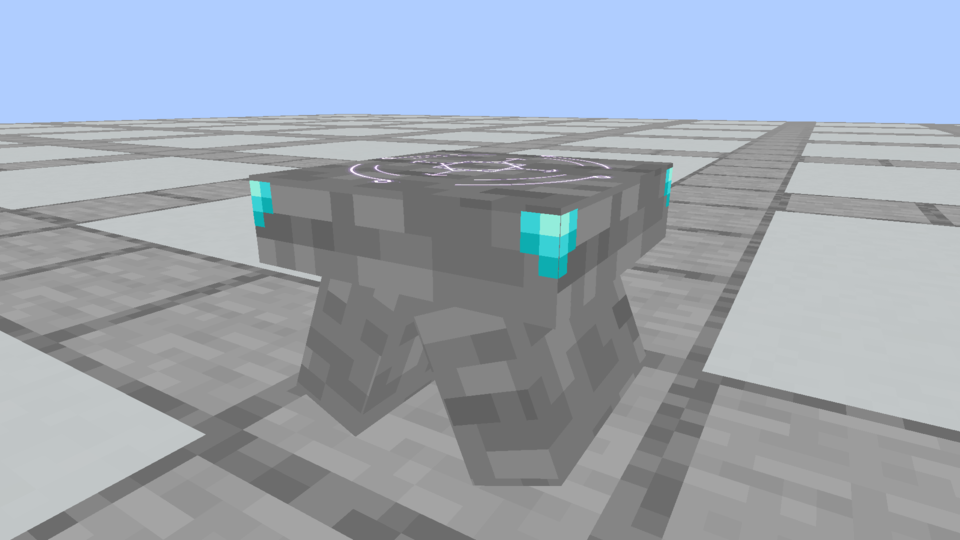
Faint SpellstoneThe preceding slab and support detail.
Native variants, columns and inventory
Earlier framing studies
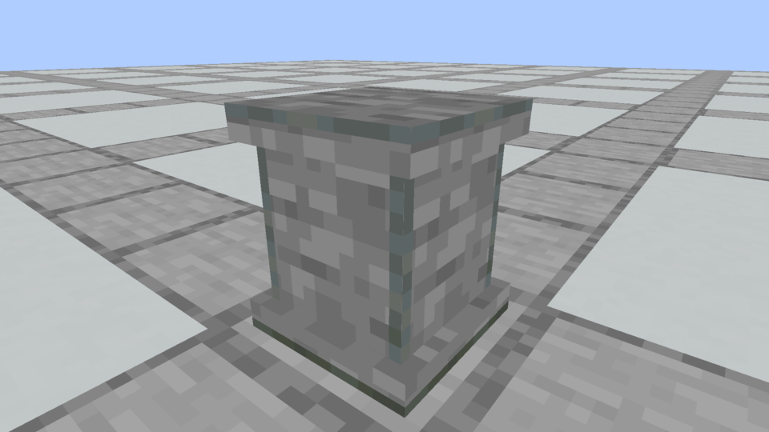
Polished Tuff edgingThe earlier stronger contrast.
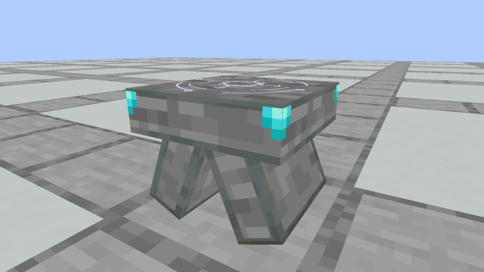
Polished Tuff SpellstoneThe earlier matching outlines.
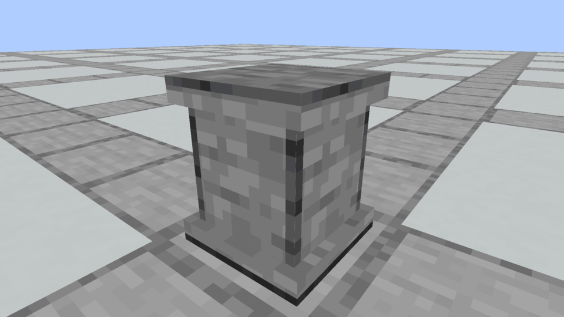
E · Original dark edgingThe first corner-and-rim combination.
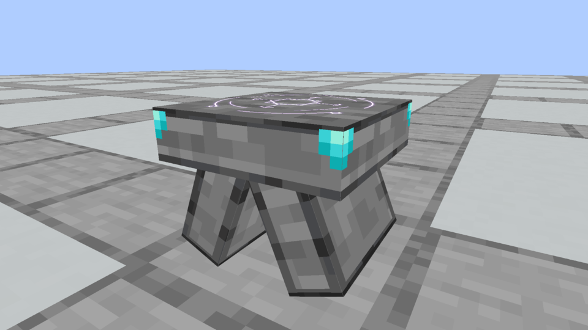
Original dark Spellstone edgingThe first matching Spellstone.
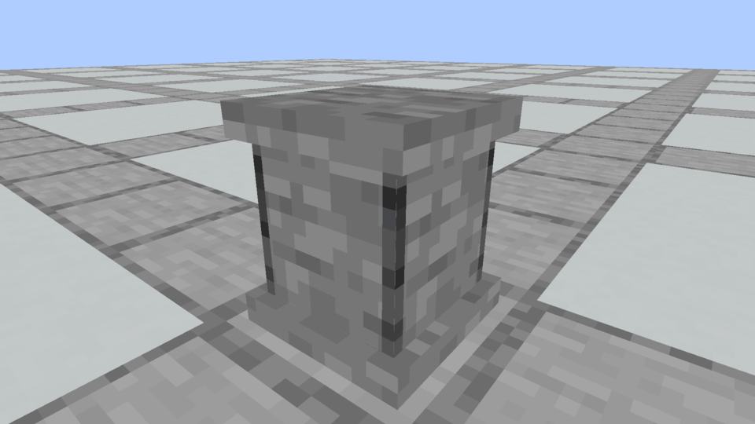
B · Corner stripsThe corner-only study.
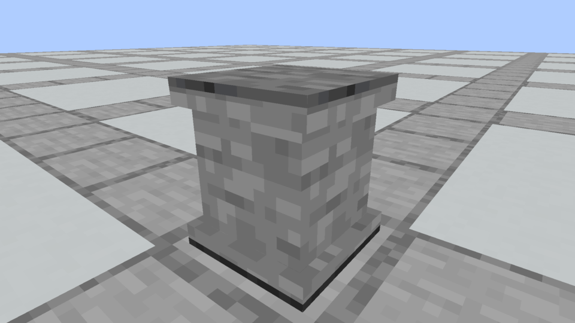
A · Rim bandsA thin accent around the cap and foot.
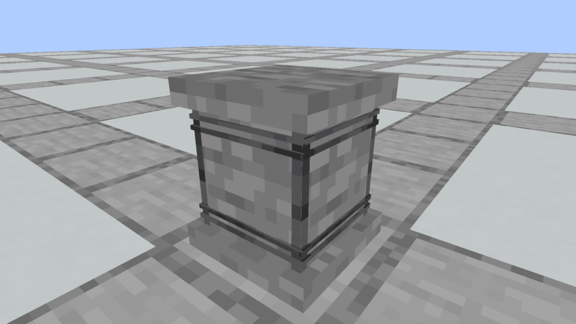
D · Corner strips + ribsPaired raised bands on the shaft.
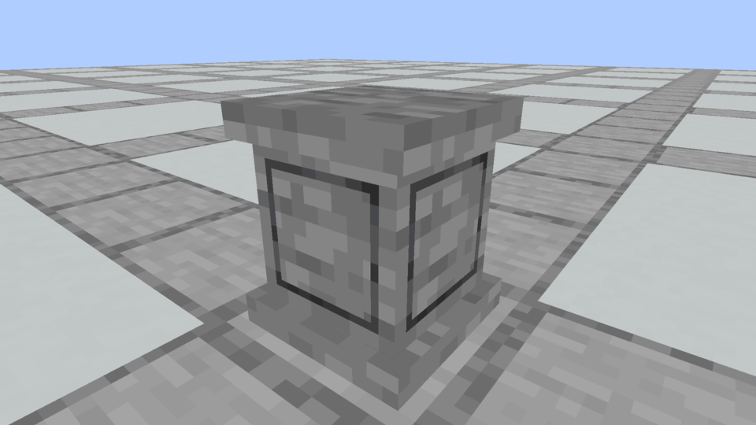
C · Framed sidesA rectangular outline on each face.